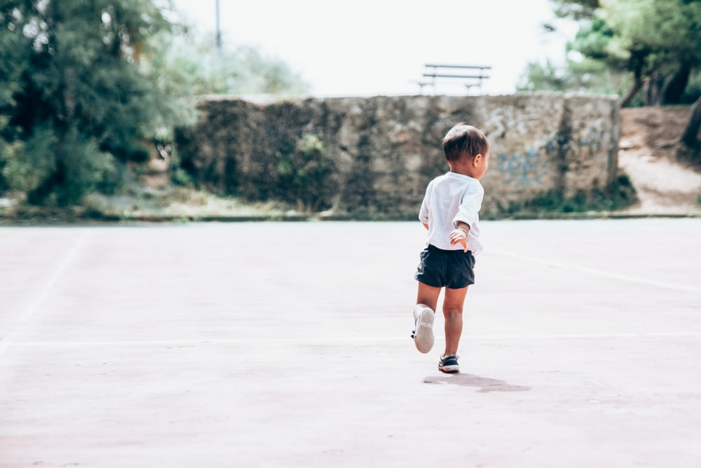

I was holding a little girl seemed to be my sister at the beginning of the dream and then changed into her being my daughter.
We were in prestige shopping center (my childhood mall) we were looking for snacks to share.
We spoke in Japanese the whole dream.
Suddenly she went missing after I put her down; I was really stressed trying to find her.
I went upstairs to the manegement office and yelled at them to find her quickly
In the end I found her at the end with an elderly woman and she ran over to hug me while crying.
